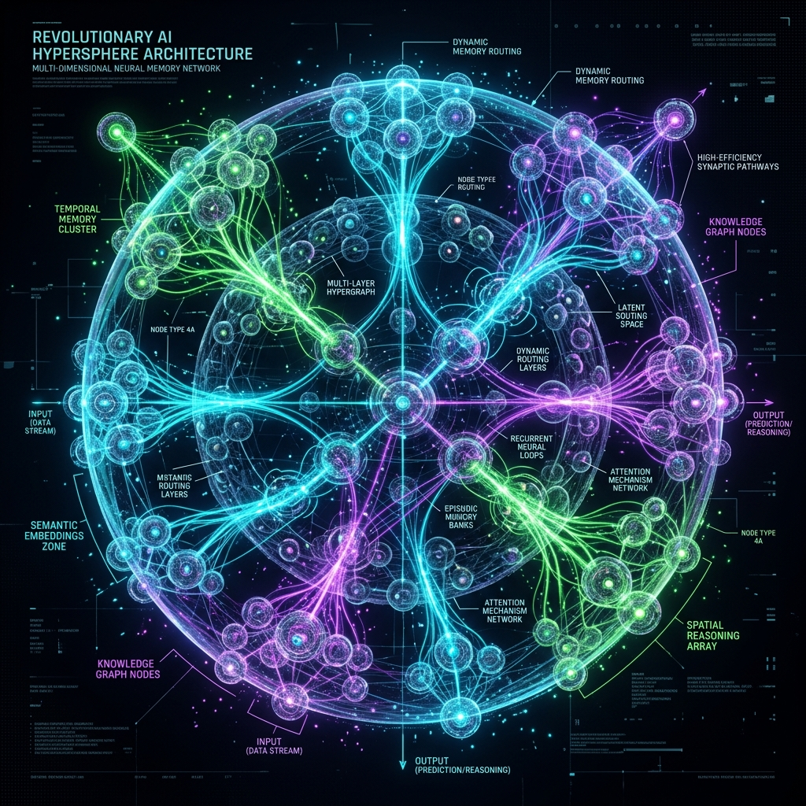

The first true departure from flat-layer AI. Stream 1-Trillion parameter models natively from NVMe.
Traditional Large Language Models (LLMs) are built like massive skyscrapers. They consist of thousands of flat, rigid, vectorized layers stacked linearly on top of one another.
Because they are flat and linear, every single layer must be loaded into expensive GPU VRAM simultaneously. If a model is 100GB, you need 100GB of VRAM to even turn it on.
This "brute force" architecture is why running frontier models requires multi-million dollar data centers.

Instead of stacking flat layers, HyperSpherical Architecture organizes the model into a multi-dimensional, interconnected web of spherical nodes.
Think of it like the human brain. You don't use 100% of your brain to answer a simple question. The HyperSpherical engine predicts exactly which "spheres" of knowledge are needed for a specific word, and streams only those pieces directly from your SSD to the GPU.
This dynamic branching means we can bypass the VRAM bottleneck completely.
By restructuring how the AI accesses its own memory, the hardware requirements to run it drop exponentially.
$2,500,000+ Hardware
Requires 64x GPUs and InfiniBand networking just to load a 1-Trillion parameter model.
~$500,000 Custom Server
Runs 2x Trillion-parameter frontier models simultaneously using dense NVMe PCIe 5.0 streaming.
Compresses context tokens by up to 10x before they are processed, enabling lifetime conversation recall without API rate limits.
All decompression dictionaries remain in localized VRAM. When the session ends, the memory is wiped clean.